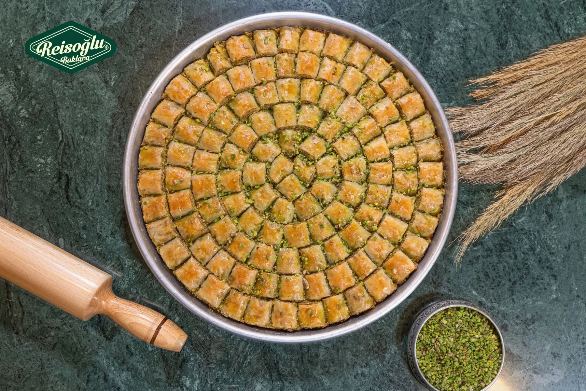

%100 sade yağ, %100 Antep fıstığı.

Siparişten teslimata
Baklavalarımız en kaliteli Antep fıstığı ve sade yağ ile hazırlanır. Her çeşidin 1 kg paket fiyatı menüde yazılıdır.
Siparişlerinizi aynı gün eve teslim, mağazadan teslim ya da kargo ile alabilirsiniz. Hafta içi saat 16:00’a, cumartesi 13:00’a kadar verilen siparişler aynı iş günü kargoya verilir; pazar günleri kargo gönderimi yapılmaz.
Çeşitlerin çoğu 0,5 kg ve 1 kg paket ile 2 ve 3 kg’lık tepsi olarak sipariş edilir. İsme özel büyük ve küçük tepsi baklava da hazırlanır.
- 20
- çeşit, hepsi fiyatıyla menüde
- 16:00
- hafta içi, aynı gün kargo için son sipariş saati
- 3.500 TL
- ve üzeri siparişte ücretsiz teslimat